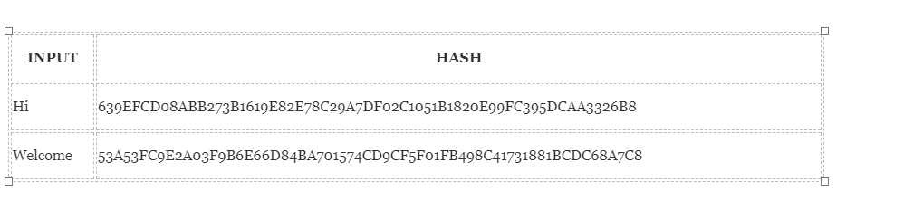
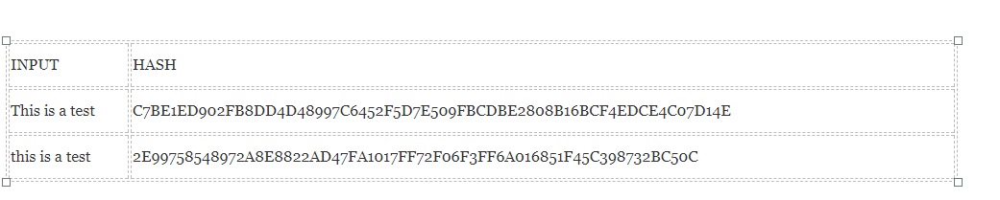
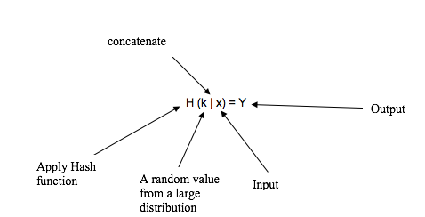
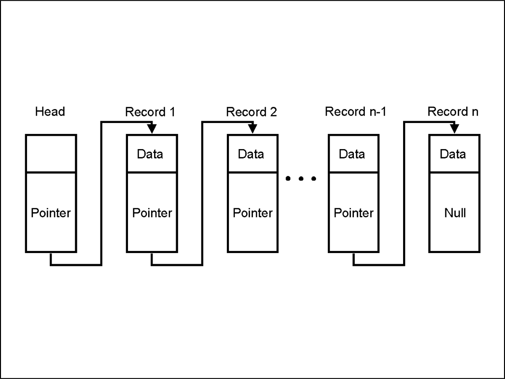
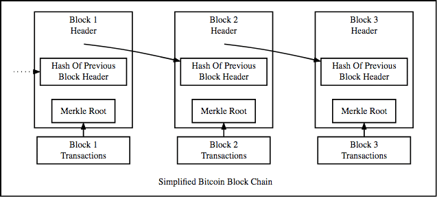
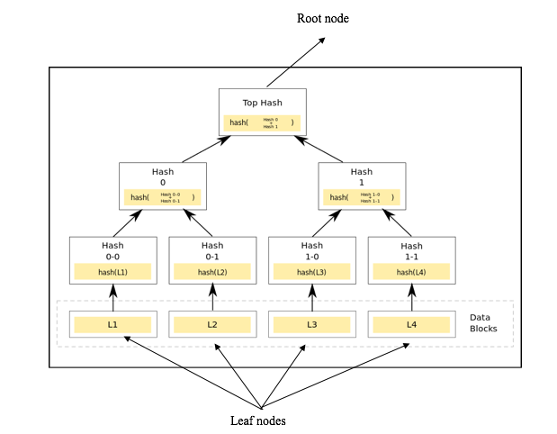

HASHING FUNCTION
Hashing function is one of the basic concepts to understand in cryptocurrencies because it is the base of mining. A hashing function takes input of any size bit string and gives a fixed length output.
Image courtesy: Blockgeeks
It can be seen that the output is same size for both Hi and Welcome. This functionality becomes very beneficial when we need to deal with a huge amount of data because instead of keeping record of a massive input, only the hash of input can be remembered to keep track. The output of a hash function for a given input can be computed efficiently within a reasonable time.
CRYPTOGRAPHIC HASH FUNCTION
Cryptographic hash function has some properties. These properties make these functions secure and reliable.
PROPERTY 1: DETERMINISTIC
This property requires the output of a certain input to be same regardless of how many times the input is compiled. If different results are generated each time it will not be possible to keep track of the input.
PROPERTY 2: QUICK COMPUTATION
A hashing function should be efficient enough to generate the hash of an input in high speed. A slow process will affect the efficiency of the system.
PROPERTY 3: COLLISION RESISTANCE
Another property that a cryptographic function needs to hold is collision resistance. This collision occurs when two distinctive inputs generate the same output. x ≠ y, yet H(x)= H(y) Here x ≠ y, however the output of both is equal or same. A hash function is considered to be collision resistant if no collision can be found. Here it is important to notice saying that a collision cannot be found does not mean that collision does not exist.
WHAT COLLISION RESISTANCE IS USEFUL FOR?
This property can be used for security purposes. For instance, Alice saves a file to an online storage system and when she downloads it the next time she wants to know if the file has not been modified. One way of doing it is that she can store a copy of a file in her computer and then compare it with the one she downloaded but this eliminates the whole point of saving the file online if she has to use one stored in her computer. Another way of achieving integrity is using the collision resistance property. In cryptography integrity means that the data has not been modified. Alice can compute the hash output of the file and later on when she downloads the file she can compute the hash function and if the output is same it means that file has not been modified because we assume hashing function to be collision resistant. Different inputs cannot have the same output therefore the file must be the same but if the output is different it means that the file has been compromised.
PROPERTY 4: PRE-IMAGE RESISTANCE
This property states that giving H(A) it is infeasible to find A. where A is input and H(A) is the output. Here the point to consider is that it is “infeasible” to find the input but not “impossible”. For instance, on rolling a dice we end up with a hash H(A). To find what the original number(A) was, we will have to compute the hashes 1-6 and whatever number’s hash matches that number is A. However, this method of finding A will only work when data is less. Suppose, if we need to find a 128-bit hash. The only method that can be used to find A is “brute-force method”. In this method, to find A we will have to compute the hash of each and every input and compare it with the target hash until we find the solution. On using this method one of the following 3 scenarios will occur: 1. Best case scenario The answer is found on first try and the person would be extremely lucky if this happens. 2. Worst case scenario The answer is found after checking each and every input (2^128 – 1 times). 3. It is found somewhere in the middle 2^128/2= 1.7 X 10^38 Which is a huge number too. In essence, it is possible to find the input by brute-force method but it is extremely time consuming and hard that this possibility can be neglected.
PROPERTY 5: SMALL CHANGE MAKES BIG CHANGES
One of the property of hash function is that even small change in the input make big difference to the output of the hash Image courtesy: Blockgeeks
It can be seen clearly that in input 2 even changing just first letter from Capital to Small has changed the whole hash output. This functionality of hashing function makes Blockchain immensely secure because it ensures that Blockchain is immutable.
PROPERTY 6: PUZZLE FRIENDLINESS
This property is base of mining which will be discussed later in mining section. This property states: “For every output “Y”, if k is chosen from a distribution with high min-entropy it is infeasible to find an input x such that H(k | x) = Y.” To understand this property, it is crucial to understand each and every term. 1. High min entropy This property means that the chosen value is hugely distributed that selecting a random value from that distribution will have negligible probability to be found. In simple words, if a value is chosen from 1-6, that’s a low min-entropy distribution and if a value is chosen between 1 and gazillion, that is a high-min entropy.  Now if the definition is revised in a simplistic way- x is concatenated with k (k | x) while k is chosen from a large distribution
- then hash function is applied to it H (k | x) produces the output Y. H (k | x) =Y
EXAMPLES OF CRYPTOGRAPHIC HASH FUNCTIONS
MD 5
generates a 128-bit hash.SHA 1
Generates a 160-bit hashSHA 256
Generates a 256-bit hash. Bitcoin uses 256-bit hash algorithm.Keccak-256
It produces 256 bit-hash and used by Ethereum.HASHING AND BLOCKCHAIN
A data structure is used for storing data. To understand how Blockchain works it is important to learn about two data structure properties. 1. Pointers 2. Linked ListsPOINTERS
In programming the variable which stores the address of another variable are called pointers. Therefore, they are called pointers because they point towards the address of another variable.LINKED LISTS
A linked list is a significant element in data structures. Image courtesy: Blockgeeks
Hash pointer
The structure of Blockchain is based on hash pointers and a linked list of blocks. Image courtesy: Blockgeeks
MERKLE TREE AND BLOCKCHAIN
MERKLE TREE USE IN BLOCKCHAIN
There are thousands and thousands of transactions in each block. it will be very time-consuming and heavy to find a specific transaction as data is huge. However, if the data is stored in merkle trees, it will be a lot easier to check if a particular transaction is part of a block or not.A merkle tree
Image courtesy: Wikipedia
Image courtesy: Coursera